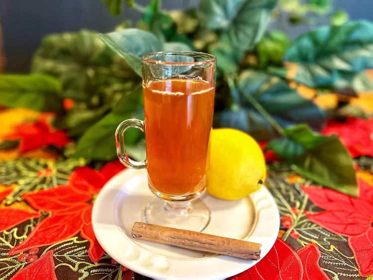

Cinnamon Tea

A good way to enjoy a drink while staying also healthy!
Ingredients
- 1 1/2 cups water
- 1 1/2 sticks Ceylon cinnamon, broken into pieces
- choice of sweetener, such as honey, sugar, or piloncillo (optional)
- 1/2 teaspoon lemon juice, or as needed (optional)
Steps
- Place water and cinnamon sticks in a pot and bring to a boil. Reduce heat and simmer for 10 minutes. Strain tea and pour into a cup; add sweetener and lemon juice as desired.
- Enjoy!